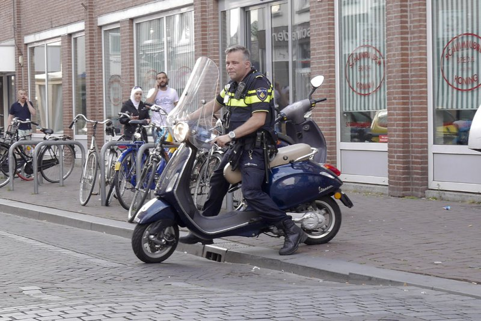
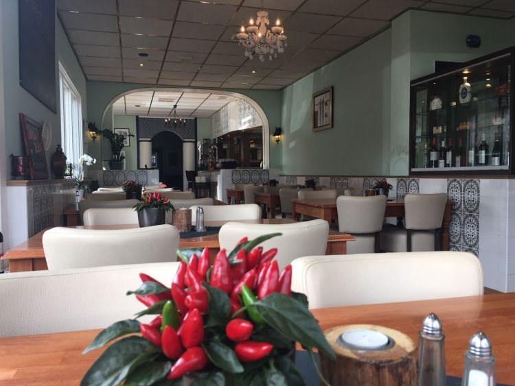
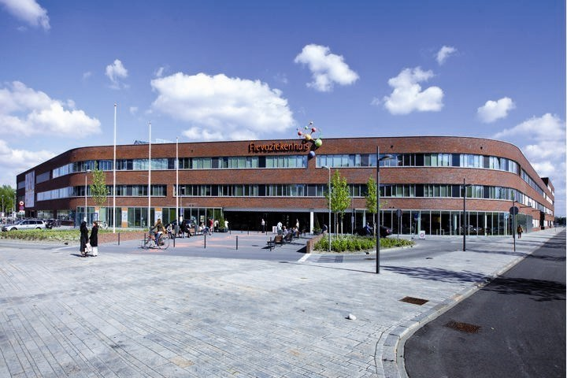
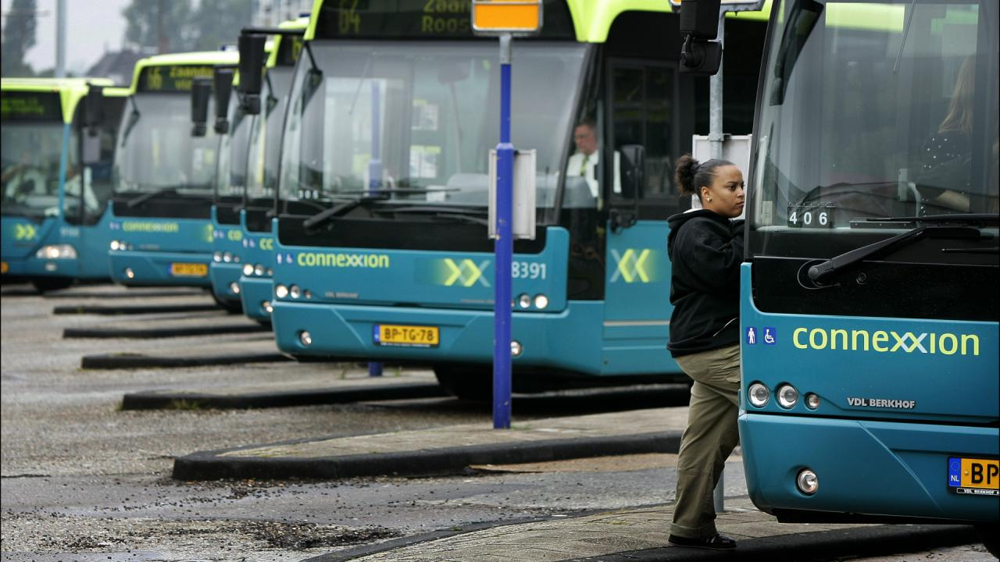

De politie heeft zondag een 14-jarige jongen uit Almere aangehouden op verdenking van
scooterdiefstal.
Volgens de politie kregen zij zondag een melding over een aantal jongeren die op het schoolplein van
een
school in de Kruidenwijk aan het stunten waren op een scooter.
Agenten die poolshoogte kwamen nemen, zagen de scooter rijden met daarop twee jongens. Toen agenten
de
jongens een stopteken gaven, negeerden zij deze waarop de bestuurder zijn bijrijder afzette en er
vervolgens vandoor ging.
De politie achtervolgde de scooter die vervolgens een pad met paaltjes inreed. Een agent ging
vervolgens
te voet achter de scooter aan. Na verloop van tijd dacht de bestuurder zich verborgen te houden met
de
scooter achter een busje, waarna hij werd vastgepakt door de agent.
De bestuurder besloot om gas te blijven geven waarna de bestuurder tegen een schuur en kliko aan
reed en
vervolgens ten val kwam. De jongen is vervolgens aangehouden.
Uit onderzoek bleek dat zowel de scooter als de kentekenplaten gestolen waren, de jongen zit nog
vast
voor verder onderzoek.
Eerste Hongaarse Wijnhuis Almere
De Almeerse drankengroothandel BON Import en het Hongaarse wijnhuis Garamvarí hebben de handen ineen
geslagen met een nieuw concept waarbij de eerste Hongaarse wijnbar van Nederland is gerealiseerd.
Het restaurant The Hungarian Corner in Den Haag is na een verbouwing heropend met een geheel
Hongaarse wijnbar. De bijzondere samenwerking tussen BON Import en Garamvarí is ontstaan tijdens de
jaarlijkse proeverij bij de Hongaarse ambassade in Den Haag.

De eigenaar van het Haagse restaurant speelde al langer met het idee om een Hongaarse wijnbar te
openen, welke kon gerealiseerd door de samenwerking tussen de partijen. “Naast de traditionele
wijnen beschikken we ook over internationale wijntypen. Deze hoge variëteit aan druiven maakt de
Hongaarse wijnen uiterst geschikt om een geheel eigen wijnbar te voeren“, vertelt Sylvain Scheers
van BON Import.
Wanneer de wijnbar succesvol blijkt te zijn, hebben de samenwerkende partijen het voornemen om
meerdere vestigingen te openen in het land.
Stage lopen in Almere, het kan
Stage lopen in Almere?, het kan. In Almere zijn er in verschillende soorten bedrijven plek voor een
stage.
Vooral in de ICT-branche kunt u veel terecht in Almere. Ook biedt Almere natuurlijk stages op andere
branches vanaf het niveau MBO 2. Denk bijvoorbeeld aan stages in Beauty, Marketing, Communicatie, Media,
Handel, Detail, Sport, Techniek, Horeca, Dans, Zang en niet te vergeten in de geneeskunde.

Almere beschikt over een handig netwerk van bussen en treinen. Via NS kunt u langs alle stations die
door Almere lopen,
waar in Almere Centrum centraal staat. Verder kunt u met de bussen die Connexion aanbiedt, gemakkelijk
van A naar B komen.

Klik hier voor meer informatie over stage.